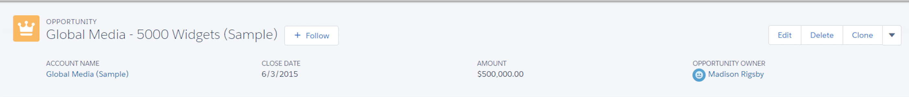

Define Key Players and Supporting Players
-
Key Players
-
Administrator
Supports Business Process Mapping. Configures Salesforce. Trains and Suports End-Users
-
Business Process Owner
Has deep knoweldge of sales-process & steps. Can map sales-process steps to Salesforce. Can Validate Design and Testing.
-
Administrator
-
Supporting Players
-
Executive Sponsor
Articulates the Value. Encourages adoption. Communicates the strategy.
-
Data Analyst
Has deep knowledge of the current data. Owns data-mapping and consolidation strategy in Salesforce.
-
Champion
Passinate about Salesforce Implementation. Ensures Salesforce is meeting the end-user needs. Drives adoption!
-
Executive Sponsor
Plan Your Implementation - playlist
Select Type of Implementation Support

Self-Implement
- Strong in-house expertise
- Ability to dedicate time for setup
- Will be using mostly out-of-box functionality
With Partner
Feedback and Validation
Validation
- Who: Most Capable Person/Team
- Needs: Sandbox, Config, User-setup, Test-data
- Timing: Avoid end-of-quarter
Get Word Out

- Pre-Launch: Program Vision, Business Goals, Key Players
- Week of Launch: How to access Salesforce, How to get help
- Post-Launch: User recognition, Tips & tricks, How to get help
Business Objectives
- Define your goals: Define a clear purpose for your Salesforce initiative, drive ongoing commitment, and provide a way to measure and prove results.
- List your pain-points: Capture the issues that various groups are facing
- Prioritize goals: To help focus your Salesforce implementation efforts going forward
- Define Measurements : What you’ll use to measure the success of your Salesforce implementation:
- Usage and data quality
- Percentage of users logging into Salesforce
- Number of accounts, contacts, and opportunities created, Number of active licenses
- Login leaderboard, Hall of Fame
- Average number of opportunities associated to an account
- Number of open opportunities with close dates in the past
- User satisfaction
- Is the training helping you perform your job?
- Have you improved lead qualification?
- Do you find competitor information quickly?
- Is collaboration helping to close deals faster?
- Business performance
- How is my team tracking with sales?
- Do I have a sufficient pipeline?
- What is the quality of my leads?
- Are we remaining engaged with our customers
Define Your Sales Process
- Define your Sales Process : Define the steps you go through to close a deal (such as your sales funnel). Define the criteria that will be required before you move to the next stage.
- Stages
- Lead: Individuals are received through a lead source, they are not current customers, and interest is not confirmed.
- Prospecting: An individual is an existing customer with a new opportunity.
- Qualification:An individual has been contacted and expressed interest.
- Discovery or Scoping: Interactions to understand individual needs for a particular deal are in progress.
- Proposal or Price Quote:A proposal or quote is being developed.
- Negotiation or Review:An individual has a proposal and has not made a decision.
- Closed or Won/Lost:An individual accepts or rejects a proposal .
- Set up your role hierarchy. : What role hierarchy will ensure that your managers have access to the same data as their employees?
- How to setup role hierarchy
- Identify the roles you want to set up based on your organization’s structure.
- Create your role hierarchy and set up your roles.
- Enter your users: What employees would benefit from access to Salesforce?
- Enter the names of your users.
- Assign your users to roles and profiles.
Create Your Users
Define your Sales Process
Set up Users
- Usage and data quality
Set up Leads
- Adjust the standard fields to match your business :
Lead Standard Fields
- Set required fields.
- Update picklist values.
- Set default values.
- Add custom fields (if necessary) :
- What additional lead information do I need to track for reporting purposes?
- Determine your lead import approach and enter your leads:
- Manually Enter Leads
- Web-to-Lead to collect Leads Demo: Web-to-Lead
- Import Leads - if you have purchased Leads
- Assign your leads:
- Manually Lead Assignment: for low volume of leads
- Lead Queues: distribute leads to a group of people to work on
- Lead Assignment Rules: process or set of rules to distribute leads based on attributes (like Regional, Industry, or Product)
- Create custom list views:
- Select particular fields that drive the action you want to perform
- Adapt dashboards and reports:
- What metrics do you need to run your business
- Modify reports and dashboards to align to your business.
- Share reports and dashboards with appropriate users.
Customize Salesforce - playlist
Set up Opportunities
- Adjust the standard fields to match your business :
Opportunity Standard Fields
- Set required fields.
- Update picklist values.
- Set default values.
- Add custom fields (if necessary) :
- What additional Opportunity information do I need to track for reporting purposes?
- Set up opportunity products:
- Enter your products manually or with the Data Loader.
- Enter your standard price book
- If you are not using products and price books: Hide the products related list from the opportunity page.
- Set up Sales Path:
- Guide your users along steps in a process, like working an opportunity from stage 1 to close
- Create a path to guide users on a process
- Select key fields to focus users on the most critical information, and at each step, help users succeed with step-specific guidance
- Customize Highlights panel:
- Ability to have key fields highlighted at the top of the screen: 
- Edit Compact Layouts to add fields to appear in an object’s highlights area, like at the top of the Opportunity page.
- Create custom list views:
- Select particular fields that drive the action you want to perform
- Create dashboards and reports:
- What metrics do you need to run your business
- Modify reports and dashboards to align to your business.
- Share reports and dashboards with appropriate users.
Set up Activities
- Adjust the standard fields to match your business :
Task Standard Fields
Event Standard Fields
- Set required fields.
- Update picklist values.
- Set default values.
- Add custom fields (if necessary) :
- What additional Activity information do I need to track for reporting purposes?
- Set up email integration: Synchronize Salesforce with your email provider
- Lightning For Outlook LOF
- Create custom list views:
- Select particular fields that drive the action you want to perform
- Create dashboards and reports:
- What metrics do you need to run your business
- Modify reports and dashboards to align to your business.
- Share reports and dashboards with appropriate users.
Utilize Chatter
- Sales teams collaboration on deals : Collaborate on opportunities
- Collaborate on opportunities
- Chatter Groups:
1. Salesforce Training, Tips and Support.
2. Company initiative or event.
Salesforce Mobile App
- Available from Apple AppStore and Google Play : Use App to:
- View, modify, and create contacts, accounts, opportunities, and tasks.
- Collaborate with Chatter.
- View reports and dashboards.
- Use the Today App.
- Customize the Salesforce Mobile App:
- Branding
- Pay layouts
- Navigation menu
- Notifications
- Publisher actions
Set up Accounts
- Adjust the standard fields to match your business :
Account Standard Fields
- Set required fields.
- Update picklist values.
- Set default values.
- Add custom fields (if necessary) :
- What additional Account information do I need to track for reporting purposes?
- Create an account hierarchy (if needed): To track multiple locations, franchises, and subsidiaries on an account
- Create an account hierarchy by associating an existing and/or new account to a parent account.
- If loading accounts, include a column with the parent account ID and map that to the Parent Account field in Salesforce
- Create custom list views:
- Select particular fields that drive the action you want to perform: Customer Accounts or Competitor Accounts
- Create dashboards and reports:
- What metrics do you need to run your business
- Modify reports and dashboards to align to your business.
- Share reports and dashboards with appropriate users.
Set up Contacts
- Adjust the standard fields to match your business :
Contact Standard Fields
- Set required fields.
- Update picklist values.
- Set default values.
- Add custom fields (if necessary) :
- What additional Contact information do I need to track for reporting purposes?
- Create custom list views:
- Select particular fields that drive the action you want to perform
- Create dashboards and reports:
- What metrics do you need to run your business
- Modify reports and dashboards to align to your business.
- Share reports and dashboards with appropriate users.
Align Salesforce to Your Business
- Improve Usability With Page Layouts:
- Create new sections with meaningful section headers
- Improve Usability With Search Modification:
- Add more fields to make it easier to use lookup fields.
- Make sure that relevant fields are returned in search.
Identify Data and Prepare Your Data for Import
- Data Analysis:
- Determine the data for import and its source.
- Data Prep: Clean and de-duped data:
- To create your data import template, export field name columns from Salesforce.
- Include the record owner ID
- Populate required fields
- Use valid picklist values (such as Not Started, In Review, and Complete).
- Examine data and correct errors:
- Delete duplicates.
- Correct spelling.
- Correct spelling.
- Enforce Data Standards Data Governance
- Include legacy system data ID
Import Data
- Choose data to import.
- Edit field mapping.
- Test on subsets of records before a full import.
- Review and start import.
Import and Manage Data - playlist
Manage Your Data
- Data Quality: standards in place to maintain the data
- Use naming, address conventions.
- Prevent duplicates.
- Establish required field.
- Create default values.
- Use data validation rules.
- Data Archive Strategy
- Determine an archive strategy for data you do not migrate.
- Determine an ongoing archive strategy for data.
- Data Backup Strategy
- Weekly Data Export Service.
- Explore the AppExchange for options available for data backup.
- Create Data Quality Dashboards
- Modify reports and dashboards to align to your business.
- Share the reports and dashboards with appropriate users.
Identify Audience
- Determine the audience groups that need to be trained and what scenarios are covered by Salesforce. Then map the processes that are relevant to each audience.
Determine Relevant Scenarios
- Think about the typical Salesforce processes that your users will go through on a daily basis. Plan your training around these processes and document both the scenario and the Salesforce functions that you’ll cover
Define Your Training Paths
-
Training paths are the sequence of training and type of training that you want for your users. This can vary by type of audience (such as a sales rep or an executive).
Train Your Users - playlist
Drive user adoption
- Motivate
- Leverage executive leadership.
- Emphasize the value.
- Motivate by recognition.
- Develop incentives.
- Support
- Utilize super users.
- Document your support process and share.
- Address problems quickly and publicly.
- Offer refresher training.
- Motivate
- Develop a communication plan.
- Create feedback loops.
- Reach out to “resistors.”
- “Walk the floor.”
Track and Measure Success
- Measure Salesforce Usage:
- How users are leveraging Salesforce? What actions will you take based on your observations?
- Measure Data Quality
- How will you keep your data up to date and validate that users are using Salesforce appropriately?
- Assess User Satisfaction
- How will you determine if pain points are being addressed and if Salesforce is helping users reach their goals?: Chatter Polls and Surveys.
Explore Salesforce Analytics - playlist
Track Achievement of Business Outcomes
- Are all the metrics defined in Step 1: Prepare for Success reflected in the reports and dashboards?
Sharing Layers